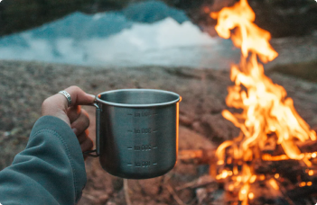
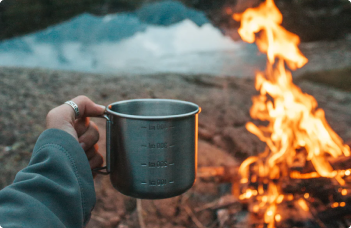

私人島嶼的露營奇遇記
2024 / 5 / 1嗨！我是秘境尋蹤小編 Elly，很高興能與你分享我這段令人心曠神怡的旅程。 這不僅僅是一次旅行，更是一場對自然、對內心的深度體悟，一次重新與大自然連結的奇妙旅程。 希望透過我的分享，你也能感受到這份自然之美，並找到一份屬於自己的心靈寧靜。
這段旅程的開始，是從一個遙遠的小島。我對於這片土地的認識，僅止於一些遊記和照片， 對於它的神秘感與未知感讓我充滿了好奇。一艘小船，帶著我穿越海浪，穿過風暴，終於抵達了這片被大自然雕琢的寶地。 當我踏上這片島嶼的那一刻，心中充滿了震撼與喜悅。


這個小島並不大，但卻擁有令人驚艷的景色。在午夜的沙灘上，星空如水晶般璀璨， 海浪聲如琴音般撫慰著我的心靈。椰林掩映著沙灘，樹影婆娑，彷彿舞者在天空中翩翩起舞。 我選擇在沙灘上搭建了我的帳篷，每一天清晨，太陽的第一縷光照在我的臉上，讓我感受到生命的美好。
島上的每個角落都充滿了驚喜和挑戰。在叢林中，我發現了許多珍貴的生物，每一種都是大自然的奇蹟。 在海邊，我盡情地嬉戲於波濤之間，感受海風撫過臉龐的清涼。我發現，與大自然的親密接觸， 讓我感受到了一種無法言喻的喜悅和寧靜。


 
